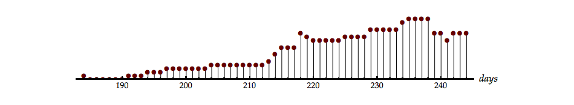

1 Filtering of Stochastic Signals
We now have the tools necessary to describe what happens when a stochastic signal is processed through a linear, time-invariant (LTI) system. These tools consist of measures on the random signals which describe and/or characterize the signals. The two most important of these are the mean value of the signal and the autocorrelation function of the signal. Further, we can characterize the relation between two random signals through the cross-correlation function. In all of our discussions we will assume that our random processes are complex as well as ergodic (and thus stationary).
We recall that:
| \[\begin{array}{*{20}{l}} {{\varphi _{xx}}[k]}&{ = E\left\{ {x[n]\,{x^*}[n + k]} \right\}}\\ {\,\,\,}&{ = \; < x[n]\,{x^*}[n + k] > \;}\\ {\,\,\,}&\begin{array}{l} = \mathop {\lim }\limits_{N \to \infty } \frac{1}{{2N + 1}}\sum\limits_{n = - N}^{ + N} {x[n]\,{x^*}[n + k]} \\ \,\,\, \end{array} \end{array}\] | \[(1.1)\] |
| \[\begin{array}{l} \begin{array}{*{20}{l}} {{\varphi _{xy}}[k]}&{ = E\left\{ {x[n]\,{y^*}[n + k]} \right\}}\\ {\,\,\,}&{ = \; < x[n]\,{y^*}[n + k] > \;}\\ {\,\,\,}&{ = \mathop {\lim }\limits_{N \to \infty } \frac{1}{{2N + 1}}\sum\limits_{n = - N}^{ + N} {x[n]\,{y^*}[n + k]} } \end{array}\\ \,\,\, \end{array}\] | \[(1.2)\] |
| \[\begin{array}{*{20}{l}} {{m_x}}&{ = E\left\{ {x[n]} \right\} = \; < x[n] > }\\ {\,\,\,}&{ = \mathop {\lim }\limits_{N \to \infty } \frac{1}{{2N + 1}}\sum\limits_{n = - N}^{ + N} {x[n]} } \end{array}\] | \[(1.3)\] |
To understand what happens when stochastic signals are processed by LTI systems, let us begin with discrete-time convolution.
1.1 Interpretation of the convolution result
First we can say that the relation between input and output is still given by the convolution sum, that is, we can write the input as:
| \[x[n] = \sum\limits_{k = - \infty }^{ + \infty } {x[k]\,\delta [n - k]}\] | \[(1.4)\] |
The total signal is a weighted sum of unit impulse functions where the weights \(\left\{ {x[k]} \right\}\) have random values according to some probability function. The basic concepts of convolution theory, as argued below, still hold. As a reminder of what eq. 1.4 means, see fig. ¿fig:label6?Figure 3.1.
The deterministic impulse function \(\delta [n]\) produces the impulse response \(h[n]\) from the LTI system. A delayed version \(\delta [n - k]\) produces a delayed output \(h[n - k]\). Multiplication of the input by a scale factor produces multiplication of the output by the same factor even if that factor is a random variable.
Thus \(x[k]\,\delta [n - k]\) will produce \(x[k]\,h[n - k]\) as an output. Because the input \(x[n]\) can be expressed as the sum of inputs of this form, we can apply the linearity conditions, eq. ¿eq:additive? Eq. 4.13 and eq. ¿eq:homogeneous? Eq. 4.14, to write the output as:
| \[y[n] = \sum\limits_{k = - \infty }^{ + \infty } {x[k]\,h[n - k]} = x[n] \otimes h[n]\] | \[(1.5)\] |
The model for this situation is shown in fig. 1.1.
![Figure 1.1: A stochastic signal x[n] filtered by a deterministic LTI filter h[n] to produce a stochastic output signal y[n].](images/Fig_6_1.png)
It is easy to see from eq. 1.5 that \(y[n]\) will be a stochastic signal if \(x[n]\) is a stochastic signal. The questions now arise:
- If the input mean is \({m_x}\), what is the output mean \({m_y}\)?
- If the input autocorrelation function is \({\varphi _{xx}}[k]\), what form does the output autocorrelation function \({\varphi _{yy}}[k]\) have?
- Assuming that the input is stationary, is the output also stationary?
1.2 The mean
Using the standard definition we have:
| \[\begin{array}{*{20}{l}} {{m_y}}&{ = E\left\{ {y[n]} \right\} = E\left\{ {\sum\limits_{k = - \infty }^{ + \infty } {x[k]\,h[n - k]} } \right\}}\\ {\,\,\,}&{ = \sum\limits_{k = - \infty }^{ + \infty } {E\left\{ {x[k]\,h[n - k]} \right\}} } \end{array}\] | \[(1.6)\] |
This last statement is true because, as we have observed earlier in eq. ¿eq:additive?Eq. 4.13, the averaging operator (or expectation operator) distributes over addition.
Only the weights \(\left\{ {x[k]} \right\}\) are random variables. The impulse response, \(h[n]\), of the LTI system is not random and the term \(h[n - k]\) is a constant with respect to the averaging process over the random variable \(x[k]\). We can, therefore, rewrite this equation as:
| \[{m_y} = \sum\limits_{k = - \infty }^{ + \infty } {E\left\{ {x[k]\,h[n - k]} \right\}} = \sum\limits_{k = - \infty }^{ + \infty } {E\left\{ {x[k]} \right\}\,} h[n - k]\] | \[(1.7)\] |
Because the random process \(\left\{ {x[k]} \right\}\) is stationary (independent of \(n\)) we have:
| \[\begin{array}{*{20}{l}} {{m_y}}&{ = \sum\limits_{k = - \infty }^{ + \infty } {E\left\{ {x[k]} \right\}h[n - k]} = \sum\limits_{k = - \infty }^{ + \infty } {{m_x}h[n - k]} }\\ {\,\,\,}&{ = {m_x}\sum\limits_{k = - \infty }^{ + \infty } {h[n - k]} } \end{array}\] | \[(1.8)\] |
Using the Fourier transform of the impulse response \(H(\Omega ) = F\left\{ {h[n]} \right\}\) (eq. ¿eq:label3?Eq. 3.3), this expression simplifies to:
| \[ \mainresult{\begin{array}{*{20}{l}} {{m_y}}&{ = {m_x}\sum\limits_{k = - \infty }^{ + \infty } {h[n - k]} = {m_x}\sum\limits_{n = - \infty }^{ + \infty } {h[n]} }\\ {\,\,\,}&{ = {m_x}H(\Omega = 0)} \end{array}} % end class mainresult \] | \[(1.9)\] |
What does this mean? From our knowledge of LTI filter theory, the expression \({m_y} = {m_x}H(\Omega = 0)\) makes sense. The expression says the average value of the input random signal is multiplied by the constant gain factor—the gain at (\(\Omega = 0\))—of the linear filter. Because the average value is, indeed, just a constant (DC) value, the non-fluctuating component, this is a realistic result. Note that \(H(\Omega )\), \({m_x}\) and \({m_y}\) are all complex in this derivation.
We also see through this derivation that, because the input average is stationary, the output average is also stationary.
1.3 The autocorrelation function
The development of the output correlation proceeds along similar lines:
| \[\begin{array}{l} {\varphi _{yy}}[n,n + k] = E\left\{ {y[n]{y^*}[n + k]} \right\}\\ \,\,\,\,\,\,\,\, = E\left\{ {\left( {\sum\limits_{m = - \infty }^{ + \infty } {h[m ]x[n - m ]} } \right)\left( {\sum\limits_{r = - \infty }^{ + \infty } {{h^*}[r]{x^*}[n + k - r]} } \right)} \right\}\\ \,\,\,\,\,\,\,\, = E\left\{ {\sum\limits_{m = - \infty }^{ + \infty } {\sum\limits_{r = - \infty }^{ + \infty } {h[m ]{h^*}[r]x[n - m ]{x^*}[n + k - r]} } } \right\} \end{array}\] | \[(1.10)\] |
Using the distributive property once again:
| \[{\varphi _{yy}}[n,n + k] = \sum\limits_{m = - \infty }^{ + \infty } {\sum\limits_{r = - \infty }^{ + \infty } {h[m ]{h^*}[r]E\left\{ {x[n - m ]{x^*}[n + k - r]} \right\}} }\] | \[(1.11)\] |
The term within the expectation braces \(E\left\{ \bullet \right\}\) yields \({\varphi _{xx}}[k + m - r]\) producing:
| \[{\varphi _{yy}}[n,n + k] = \sum\limits_{m = - \infty }^{ + \infty } {\sum\limits_{r = - \infty }^{ + \infty } {h[m ]{h^*}[r]{\varphi _{xx}}[k + m - r]} }\] | \[(1.12)\] |
Because \(m\) and \(r\) in eq. 1.12 are simply dummy variables that disappear when the two sums are performed, the result of the double sum, \({\varphi _{yy}}\), will only be a function of \(k\) and, of course, the precise forms of the impulse response \(h[n]\) and the autocorrelation function \({\varphi _{xx}}\).
If the right side of eq. 1.12 is only a function of \(k\) then the left side is only a function of \(k\), as well, and we have:
| \[{\varphi _{yy}}[n,n + k] = {\varphi _{yy}}[k] = \sum\limits_{m = - \infty }^{ + \infty } {\sum\limits_{r = - \infty }^{ + \infty } {h[m ]{h^*}[r]{\varphi _{xx}}[k + m - r]} }\] | \[(1.13)\] |
From this we can conclude that if \({\varphi _{xx}}[ \bullet ]\) is stationary then \({\varphi _{yy}}[ \bullet ]\) is stationary. We can go further. If we set \(n = r - m\), then:
| \[\begin{array}{*{20}{l}} {{\varphi _{yy}}[k]}&{ = \sum\limits_{m = - \infty }^{ + \infty } {\sum\limits_{n = - \infty }^{ + \infty } {h[m]{h^*}[m + n]{\varphi _{xx}}[k - n]} } }\\ {\,\,\,}&{ = \sum\limits_{n = - \infty }^{ + \infty } {{\varphi _{xx}}[k - n]} \left( {\sum\limits_{m = - \infty }^{ + \infty } {h[m]{h^*}[m + n]} } \right)} \end{array}\] | \[(1.14)\] |
We recognize from ordinary (deterministic) signal processing theory that the term within parentheses is the autocorrelation of the impulse response. If this autocorrelation is \({\varphi _{hh}}[m]\) then:
| \[ \mainresult{{\varphi _{yy}}[k] = \sum\limits_{m = - \infty }^{ + \infty } {{\varphi _{xx}}[k - m]} {\varphi _{hh}}[m] = {\varphi _{xx}}[k] \otimes {\varphi _{hh}}[k]} % end class mainresult \] | \[(1.15)\] |
Our conclusion is that the autocorrelation of the output is stationary and is the convolution of the autocorrelation function of the (random) input signal with the autocorrelation function of the (deterministic) impulse response.
1.4 The cross-correlation function
Finally we can derive the cross-correlation between the input and output as:
| \[\begin{array}{*{20}{l}} {{\varphi _{xy}}[k]}&{ = E\left\{ {x[n]{y^*}[n + k]} \right\}}\\ {\,\,\,}&{ = E\left\{ {x[n]\left( {\sum\limits_{m = - \infty }^{ + \infty } {{h^*}[m ]{x^*}[n + k - m]} } \right)} \right\}}\\ {\,\,\,}&{ = \sum\limits_{m = - \infty }^{ + \infty } {{h^*}[m ]E\left\{ {x[n]{x^*}[n + k - m]} \right\}} } \end{array}\] | \[(1.16)\] |
Once again, the term within the expectation braces gives the stationary autocorrelation function \({\varphi _{xx}}[k - m]\). Continuing,
| \[ \mainresult{{\varphi _{xy}}[k] = \sum\limits_{m = - \infty }^{ + \infty } {{h^*}[m]} {\varphi _{hh}}[k - m] = {h^*}[k] \otimes {\varphi _{xx}}[k]} % end class mainresult \] | \[(1.17)\] |
The cross-correlation function is stationary and is the convolution of the complex conjugate of the (deterministic) impulse response with the autocorrelation function of the (random) input signal.
We can now express the Fourier transforms of \({\varphi _{xx}}[k]\) and \({\varphi _{yy}}[k]\) in terms of known quantities.
| \[\begin{array}{*{20}{l}} {{S_{yy}}(\Omega )}&{ = F\left\{ {{\varphi _{yy}}[k]} \right\} = F\left\{ {{\varphi _{xx}}[k] \otimes {\varphi _{hh}}[k]} \right\}}\\ {\,\,\,}&{ = {S_{xx}}(\Omega )\;{S_{hh}}(\Omega )} \end{array}\] | \[(1.18)\] |
But using the result from Fourier theory that \(F\left\{ {{h^*}[n]} \right\} = {H^*}\left( { - \Omega } \right)\) gives:
| \[\begin{array}{*{20}{l}} {{S_{hh}}(\Omega )}&{ = F\left\{ {\sum\limits_{m = - \infty }^{ + \infty } {h[m]{h^*}[m + n]} } \right\}}\\ {\,\,\,}&{ = H( - \Omega )\;{H^*}( - \Omega ) = {{\left| {H( - \Omega )} \right|}^2}} \end{array}\] | \[(1.19)\] |
Therefore,
| \[ \mainresult{{S_{yy}}(\Omega ) = {\left| {H( - \Omega )} \right|^2}{S_{xx}}(\Omega )} % end class mainresult \] | \[(1.20)\] |
If the impulse response \(h[n]\) of the deterministic system is real, then this is equivalent to:
| \[ \specialresult{{S_{yy}}(\Omega ) = {\left| {H(\Omega )} \right|^2}{S_{xx}}(\Omega )} % end class specialresult \] | \[(1.21)\] |
Returning to the complex form of \(h[n]\), the cross power density spectrum can be similarly shown to be:
| \[ \mainresult{{S_{xy}}(\Omega ) = {H^*}( - \Omega ){S_{xx}}(\Omega )} % end class mainresult \] | \[(1.22)\] |
Again, if the impulse response \(h[n]\) of the deterministic system is real, then this is equivalent to:
| \[ \specialresult{{S_{xy}}(\Omega ) = H(\Omega ){S_{xx}}(\Omega )} % end class specialresult \] | \[(1.23)\] |
Based upon the use of these results we are now in a position to provide an interpretation of the power spectrum \({S_{xx}}(\Omega )\).
We see from eq. ¿eq:meansqpos?Eq. 5.3 that for \(k = 0\):
| \[{\varphi _{xx}}[0] = E\left\{ {x[n]{x^*}[n]} \right\}\; = E\left\{ {{{\left| {x[n]} \right|}^2}} \right\}\; \ge 0\] | \[(1.24)\] |
Similarly \({\varphi _{yy}}[k] \ge 0\) and
| \[\begin{array}{*{20}{l}} {{\varphi _{yy}}[0]}&{ = \frac{1}{{2\pi }}\int\limits_{ - \pi }^{ + \pi } {{S_{yy}}(\Omega )} d\Omega }\\ {\,\,\,}&{ = \frac{1}{{2\pi }}\int\limits_{ - \pi }^{ + \pi } {{{\left| {H( - \Omega )} \right|}^2}{S_{xx}}(\Omega )} d\Omega } \end{array}\] | \[(1.25)\] |
Let \(H(\Omega )\) be a (complex) bandpass filter (as shown in fig. 1.2) such that within the pass-band the spectrum \({S_{xx}}(\Omega )\) is essentially constant.
For complex random processes \({\varphi _{xx}}[k] = \varphi _{xx}^*[ - k]\), eq. ¿eq:autoeven?Eq. 5.5, which means that \({S_{xx}}(\Omega )\) is real (eq. ¿eq:proveSreal?)Eq. 5.26. For a sufficiently small passband \(\Delta \Omega\), we can write:
| \[\begin{array}{*{20}{l}} {{\varphi _{yy}}[0]}&{ = \frac{1}{{2\pi }}{S_{yy}}(\Omega = {\Omega _0})\Delta \Omega }&{ \ge 0}\\ {\,\,\,}&{ = \frac{1}{{2\pi }}{{\left| {H( - {\Omega _0})} \right|}^2}{S_{xx}}({\Omega _0})\Delta \Omega }&{ \ge 0} \end{array}\] | \[(1.26)\] |
Because \({S_{xx}}(\Omega )\) is real, we immediately have that
| \[{S_{xx}}({\Omega _0}) \ge 0\] | \[(1.27)\] |
for all choices of \({\Omega _0}\).
Further \({\left| {y[n]} \right|^2}\) is (by definition) the instantaneous power in a signal (including random signals) and thus \({\varphi _{yy}}[0] = E\left\{ {{{\left| {y[n]} \right|}^2}} \right\}\) is the expected power in the output signal at any instant. This means that:
| \[\begin{array}{*{20}{l}} {{\varphi _{yy}}[0]}&{ = \frac{1}{{2\pi }}{S_{yy}}({\Omega _0})\Delta \Omega }\\ {\,\,\,}&{ = \frac{1}{{2\pi }}{{\left| {H( - {\Omega _0})} \right|}^2}{S_{xx}}({\Omega _0})\Delta \Omega } \end{array}\] | \[(1.28)\] |
has the unit of power [Watts]. \({S_{xx}}(\Omega )\) like \({S_{yy}}(\Omega )\) is, therefore, expressed in Watts per unit frequency [Watts/Hz] and is thus a power density spectrum.
Other interesting and useful results can also be derived at this point:
1) We would like to show that the maximum value of the autocorrelation function occurs at \(k = 0\). We begin with:
| \[{\varphi _{xx}}[k] = \frac{1}{{2\pi }}\int\limits_{ - \pi }^{ + \pi } {{S_{xx}}(\Omega )} {e^{j\Omega k}}d\Omega\] | \[(1.29)\] |
Taking the absolute value of both sides:
| \[\begin{array}{*{20}{l}} {\left| {{\varphi _{xx}}[k]} \right|}&{ = \frac{1}{{2\pi }}\left| {\int\limits_{ - \pi }^{ + \pi } {{S_{xx}}(\Omega )} {e^{j\Omega k}}d\Omega } \right|}\\ {\,\,\,}&{ \le \frac{1}{{2\pi }}\int\limits_{ - \pi }^{ + \pi } {\left| {{S_{xx}}(\Omega )} \right|} \left| {{e^{j\Omega k}}} \right|d\Omega } \end{array}\] | \[(1.30)\] |
The inequality holds because the absolute value of an integral is always less than (or equal to) the integral of the absolute value. This is easy to see if we consider the integral as a way of measuring the area under a curve. The total area will be greater if we first make all contributions positive.
Because \(\left| {{e^{j\Omega k}}} \right| = 1\) and because the power spectrum is real and everywhere positive (eq. 1.27) we have:
| \[\begin{array}{*{20}{l}} {\left| {{\varphi _{xx}}[k]} \right|}&{ \le \frac{1}{{2\pi }}\int\limits_{ - \pi }^{ + \pi } {\left| {{S_{xx}}(\Omega )} \right|} d\Omega }\\ {\,\,\,}&{ = \frac{1}{{2\pi }}\int\limits_{ - \pi }^{ + \pi } {{S_{xx}}(\Omega )} d\Omega = {\varphi _{xx}}[0]} \end{array}\] | \[(1.31)\] |
Finally,
| \[ \mainresult{\left| {{\varphi _{xx}}[k]} \right| \le {\varphi _{xx}}[0]} % end class mainresult \] | \[(1.32)\] |
An alternative (and instructive) way to prove this result is developed in problem 1.6.
2) We might well ask under what circumstance can there be another value of \(k\) such that \(\left| {{\varphi _{xx}}[k]} \right| = {\varphi _{xx}}[0]\). The most common situation where equality is achieved is when the autocorrelation function contains a periodic component. That is, if \({\varphi _{xx}}[k] = {\varphi _{xx}}[k + K]\) then the maximum value will be repeated every \(K\) time instances. This is illustrated in [@example:predict_weather]Example 5.4. There are more elaborate ways of describing this situation but this will suffice for our introductory level.
3) Finally we can determine a bound on the average output power \({\varphi _{yy}}[0]\) given the average input power and the LTI filter characteristic \(H(\Omega )\).
| \[E\left\{ {{{\left| {y[n]} \right|}^2}} \right\} = {\varphi _{yy}}[0] = \frac{1}{{2\pi }}\int\limits_{ - \pi }^{ + \pi } {{{\left| {H( - \Omega )} \right|}^2}{S_{xx}}(\Omega )d\Omega }\] | \[(1.33)\] |
Let \({\Omega _m}\) be the frequency at which the filter has its maximum gain \(\left| {H( - {\Omega _m})} \right|\). This implies:
| \[E\left\{ {{{\left| {y[n]} \right|}^2}} \right\} \le \frac{{{{\left| {H( - {\Omega _m})} \right|}^2}}}{{2\pi }}\int\limits_{ - \pi }^{ + \pi } {{S_{xx}}(\Omega )d\Omega }\] | \[(1.34)\] |
\[{\varphi _{yy}}[0] \le {\left| {H( - {\Omega _m})} \right|^2}{\varphi _{xx}}[0]\]$${#eq:power_out3 .mainresult}
The average output power will attain the maximum if and only if
| \[{S_{xx}}(\Omega ) = B\delta (\Omega - {\Omega _m}) + B\delta (\Omega + {\Omega _m})\] | \[(1.35)\] |
that is, if \({\varphi _{xx}}[k]\) is of the form \(\cos \left( {{\Omega _m}k} \right)\). This follows directly from eq. 1.33 and eq. 1.34. The only way for the maximum to be achieved is if all the spectral power is concentrated at the frequencies \(\pm {\Omega _m}\) where the filter has its maxima.
Example 1.1 - A world of random events
The relationship described in eq. 1.32 might seem like a rather abstract result. In this example, we hope to show that use of the result can lead to useful insights into complex systems. The data shown in fig. 1.3 are the price at the “wellhead” of a barrel of oil (“Brent crude”), \(c[n]\), and the price of a liter of refined automobile gasoline (benzine) at the “pump” \(g[n]\). The graphs show the development of the price over a period of months.
Brent oil price per barrel starting 1 Jan 1990:

Brent price 2 Aug 1990 ± 30 days:

Gasoline price per liter starting 1 Jan 1990:
![Figure 1.3: Price evolution of crude oil c[n] and refined gasoline g[n] (top) Barrel price from 1 January 1990 to 16 October 1990 [289 days], The day of the event is indicated by the arrow. (middle) Daily price evolution surrounding 2 August 1990, that is, day 214 ± 30 days, (bottom) Liter price (to consumers) from 1 January 1990 to 16 October 1990 [289 days]. The day of the event is indicated by the arrow.](images/Fig_6_3_B.png)
On 2 August 1990, the 214th day of that year, an event occurred in the Middle East that influenced the world-wide price of crude oil. The steep rise in price of a barrel of oil, shown in the middle panel of fig. 1.3, attests to this. An increase in the price of a liter of gasoline at retail distribution points would also follow from this. The question we pose is: what is the delay between a rise in prices at the wellhead and a rise in prices at the “pump”? How many days does it take before the price rises in the retail sale of gasoline?
To answer this we assume that the price of gasoline \(g[n]\) is a delayed version, that is function, of the price of crude oil \(c[n]\). But this cannot be expressed as simply \(g[n] = c[n - k]\). Between these two prices are complicated processes, some industrial and some marketplace. Nevertheless, one cannot help but being struck by the similarity of the top and bottom curves in fig. 1.3.
The cross-correlation between the two prices, under the assumption that the major effect is a time delay, can help us find the answer. Assuming that the system is a pure time delay, \(h[n] = \delta [n - k]\), and using eq. 1.17 gives:
| \[\begin{array}{*{20}{l}} {{\varphi _{cg}}[k]}&{ = {h^*}[k] \otimes {\varphi _{cc}}[k] = \delta [n - k] \otimes {\varphi _{cc}}[k]}\\ {\,\,\,}&{ = {\varphi _{cc}}[n - k]} \end{array}\] | \[(1.36)\] |
A simple substitution, \(m = n - k\), allows us to rewrite this as
| \[{\varphi _{cg}}[n - m] = {\varphi _{cc}}[m]\] | \[(1.37)\] |
Applying eq. 1.32 to eq. 1.37 means that, given the model of a simple delay element, the time \(m = 0\) when the autocorrelation is a maximum is the same as the time \(m = n\) when the cross-correlation is a maximum. The cross-correlation is illustrated in fig. 1.4.
![Figure 1.4: Cross-correlation {\varphi _{cg}}[k] between the crude oil price and the gasoline pump price over an interval of 51 days. Day 0 is 2 August 1990, day 214 of the year. The position of maximum correlation is indicated by the arrow.](images/Fig_6_4.png)
The time at which the maximum occurs is day 18. Our estimate for the time delay between the wellhead and the gasoline pump, in the midst of all the stochastic variations and the (over)simplification of the model, is 18 days.
1.5 Problems
Problem 1.1
The input to a discrete-time, LTI system is a stochastic signal, \(x[n]\). At each time step the output is \(+ \delta [n - k]\) with probability \(p\) or \(- \delta [n - k]\) with probability \(1 - p\). Thus we can write:
\[x[n] = \sum\limits_{k = --\infty }^{ + \infty } {{a_k}\delta [n - k]}\]
where
\[{a_k} = \left\{ {\begin{array}{*{20}{l}} { + 1}&{{\mathop{\rm with}\nolimits} \,probability\,p}\\ { - 1}&{{\mathop{\rm with}\nolimits} \,probability\,1 - p} \end{array}} \right.\]
The LTI system has \(h[n] = {\left( {\frac{1}{4}} \right)^n}u[n]\).
- Draw and label one possible stochastic signal \(x[n]\) from this random process.
- Draw and label \(y[n]\) the output signal corresponding to your choice of \(x[n]\).
- Determine \({m_y} = E\left\{ {y[n]} \right\}\). Your answer should not contain any integrals or summations.
- Determine \({\varphi _{yy}}[k = 0] = {\left. {E\left\{ {y[n]\,{y^*}[n + k]} \right\}} \right|_{k = 0}}\).
Problem 1.2
The impulse response of a discrete-time, LTI system is given by:
\[h[n] = 3\delta [n] - 8{\left( {\frac{1}{3}} \right)^{n - 1}}u[n - 1]\]
The input signal is a real, ergodic signal \(x[n]\) where:
\[{\varphi _{xx}}[k] = E\left\{ {x[n]\,{x^*}[n + k]} \right\} = {\left( {\frac{1}{3}} \right)^{ - \left| k \right|}}\]
The output signal of the LTI system is \(y[n]\).
- Determine \({m_y} = E\left\{ {y[n]} \right\}\).
- Determine \({\varphi _{yy}}[k] = E\left\{ {y[n]\,{y^*}[n + k]} \right\}\).
Problem 1.3
Discuss the following proposition:
The function \(f[k]\) given below cannot be the auto-correlation function of a stochastic signal.
\[f[k] = \left\{ {\begin{array}{*{20}{l}} 1&{\left| k \right| \le 7}\\ 0&{\left| k \right| > 7} \end{array}} \right.\]
Problem 1.4
When the discrete-time input signal \(x[n]\) is white noise with autocorrelation function \({\varphi _{xx}}[k] = \delta [k]\), the output signal from an LTI system is ergodic with power spectral density:
\[{S_{yy}}(\Omega ) = \frac{9}{{13 - 12\cos (\Omega )}}\]
- Determine two possible causal, LTI filters \({H_1}\left( \Omega \right)\) and \({H_2}\left( \Omega \right)\) that could lead to this output power density spectrum.
- Given either of the filters, \({H_1}\left( \Omega \right)\) or \({H_2}\left( \Omega \right)\), from part (a), determine another, different noise signal \(q[n]\) that would yield the same \({S_{yy}}(\Omega )\) as given in part (a).
Problem 1.5
An ergodic process, \(x[n]\), is input to an LTI system with impulse response \(h[n]\) and Fourier transform \(H(\Omega )\). The output is \(y[n]\). It is known that \(h[n = 0] \ne 0\).
Discuss the following proposition:
If the mean of the input \(E\left\{ {x[n]} \right\} = {m_x} \ne 0\) then \(E\left\{ {y[n]} \right\} = {m_y} \ne 0\).
Problem 1.6
Consider the following expression for a real, ergodic signal \(x[n]\):
| \[E\left\{ {{{\left| {x[n] \pm x[n + k]} \right|}^2}} \right\} \geqslant 0\] | \[(1.38)\] |
- Why is this expected value non-negative?
- Use this expression to prove eq. 1.32.
1.6 Laboratory Exercises
Laboratory Exercise 1.1
In this and other laboratory exercises we will sometimes use the “digital” frequency \(\Omega\) and sometimes use the “analog” frequency \(\omega \,\,( = 2\pi f)\). Although the free use of both concepts in one exercise may be a bit unorthodox, the sampling frequency is 32 kHz so there should not be any confusion as to their relation.
In Chapters 4 and 5 we defined white noise and pink noise and presented two mathematical examples: [@example:white_noise]Example 5.2 and [@example:pink_noise]Example 5.3. In this and the subsequent laboratory exercise we will look at various “physical” examples.
| \[\longleftrightarrow\] |
|
As shown in fig. 1.5, in the top-left panel the Gaussian noise signal is displayed and in the top-right panel an estimate of the probability density function as measured from the samples in \(G[n]\)1.
![Figure 1.5: Window that accompanies generation of Gaussian noise G[n].](images/Fig_6_5.png)
In the lower-right panel the normalized power spectral density \({S_{GG}}(\Omega )\) is displayed as computed from eq. ¿eq:summ_pds_real?Eq. 5.31. In the associated left panel, the normalized autocorrelation function \({\varphi _{GG}}[k]\) is displayed—not from application of eq. ¿eq:acorrtimeavg_scaled?Eq. 5.13—but computed, instead, from the inverse Fourier transform \({\varphi _{GG}}[k] = {F^{ - 1}}\left\{ {{S_{GG}}(\Omega )} \right\}\). This seemingly indirect route allows us to use the computationally efficient FFT routine. This is an example of where we have used \(\omega = 2\pi f\) (in the lower-right panel) together with \(\Omega\) (in the formula).
- Based upon a stochastic signal of length \(N\), how much faster is the computation of \({\varphi _{GG}}[k]\) using the FFT algorithm compared to a direct computation of the autocorrelation?
- What does this imply about a speed improvement for 1.5 seconds of signal sampled at 32 kHz?
The “Zoom” slider on the top-left allows you to “zoom in” on the center of each display. On the top row a smaller sample of \(G[n]\) is displayed and the estimate of the probability density function from that segment is displayed. On the bottom row the centers of \({\varphi _{GG}}[k]\) and \({S_{GG}}(\omega )\) are displayed but based upon the complete 1.5 second long signal \(G[n]\).
- Based upon the data shown in the bottom row, is it reasonable to conclude that \(G[n]\) is a sample of a white noise process? Explain your reasoning.
Instead of Gaussian noise we will now use noise with a uniform probability distribution for the amplitude.
| \[\longleftrightarrow\] |
|
In the top-left panel the uniform noise signal is displayed and in the top-right panel an estimate of the probability density function as measured from the samples in \(U[n]\).
In the lower-right panel the normalized power spectral density \({S_{UU}}(\omega )\) is displayed. In the lower-left panel, the normalized autocorrelation function \({\varphi _{UU}}[k]\) is displayed, computed from the inverse Fourier transform.
Again, the “Zoom” slider on the top-left allows you to “zoom in” on the center of each display. On the top row a smaller sample of \(U[n]\) is displayed as is an estimate of the probability density function from that segment. On the bottom row the centers of \({\varphi _{UU}}[k]\) and \({S_{UU}}(\omega )\) are displayed but based upon the complete 1.5 second long signal \(U[n]\).
- Based upon the data shown in the bottom row, is it reasonable to conclude that \(U[n]\) is a sample of a white noise process? Explain your reasoning.
- Do you perceive the two noise signals, \(G[n]\) and \(U[n]\), as being equally loud? Can the estimates of the probability density functions explain your answer?
We now generate binary noise. In this noise process there are only two possible amplitudes at each time point: either +1 with probability \(p\) or –1 with probability \(1 - p\). Further, we choose \(p = 1/2\) and this implies the “fair coin” that we have looked at in [@example:coin_example]Example 4.1 and [@example:fair_coin]Example 4.5. The displays are as before.
| \[\longleftrightarrow\] |
|
- Based upon the data shown in the bottom row, is it reasonable to conclude that \(B[n]\) is a sample of a white noise process? Explain your reasoning.
- How do you perceive the loudness of \(B[n]\) compared to \(G[n]\) and \(U[n]\)? Can the estimates of the three probability density functions and/or the signals themselves explain your answer?
What does this mean? You should have concluded that a white noise process does not have to have a Gaussian amplitude distribution.
Laboratory Exercise 1.2
In this problem you are to estimate the parameter of an ergodic noise process \(B[n]\) based upon information from the autocorrelation function \({\varphi _{BB}}[k]\) and/or the power spectral density \({S_{BB}}(\omega )\). The process is similar to the one that produced \(B[n]\) in laboratory exercise 1.1 but now the random variable has value \(+ 1\) with probability \(p\) and value \(0\) with probability \(1 - p\). Let us call this “unfair” binary noise.
Each time you perform this exercise by pressing the icon button below another sample of the process will be generated but with a different value for \(p\). The value of \(p\) will be chosen randomly from the set \(\left\{ {0.1,\,0.2,\,0.3,\,0.4,\,0.5,\,0.6,\,0.7,\,0.8,\,0.9} \right\}\).
| \[\longleftrightarrow\] |
|
The display window that you will see has the following layout:
![Figure 1.6: The top row shows the binary noise signal B[n] and the mathematical model. The bottom row shows (left) the autocorrelation function {\varphi _{BB}}[k] and (right) the power spectral density {S_{BB}}(\omega ).](images/Fig_6_6.png)
You will notice that no estimate of the probability density function is presented. You can use the “Zoom” slider to examine the details of the random signal.
- Based upon the data shown in the bottom row, is it reasonable to conclude that \(B[n]\), an “unfair” binary process, is a sample of a white noise process? Explain your reasoning.
- Based upon \(N\) and the autocorrelation \({\varphi _{BB}}[k = 0]\), estimate the value of \(p\) that was used to generate this sample. Call this estimate \({p_1}\).
- Based upon \(N\) and the power spectral density \({S_{BB}}(\omega = 0)\) as well as \({\varphi _{BB}}[k = 0]\), estimate the value of \(p\) that was used to generate this sample. Call this estimate \({p_2}\).
- It should be clear what the true value of \(p\) is for each experiment, each time another value for \(p\) is randomly chosen from the set given above. By what percentage do \({p_1}\) and \({p_2}\) differ from \(p\)? From each other?
Laboratory Exercise 1.3
In this problem you are to estimate the parameters of two, real, ergodic noise processes based upon information from their estimated autocorrelation function \({\varphi _{ \bullet \bullet }}[k]\) and/or their estimated power spectral density \({S_{ \bullet \bullet }}(\omega )\).
In the following:
\(\mu\) is the mean value of the random process;
\(\sigma\) is the standard deviation of the random process;
\(N\) is the number of samples of the random process;
\({\varphi _0} = E\left\{ {{\varphi _{ \bullet \bullet }}[k = 0]} \right\}\) is the expected value of the sample of the autocorrelation function at \(k = 0\) as computed from the signal, and;
\({S_0} = E\left\{ {{S_{ \bullet \bullet }}(\omega = 0)} \right\}\) is the expected value of the power spectral density at \(\omega = 0\) as computed from the signal.
The key is to develop two expressions \(f\) and \(g\) that will enable us to estimate the relevant parameters.
- Find an expression based upon \(E\left\{ {{\varphi _{ \bullet \bullet }}[k]} \right\}\) that relates \(\mu\), \(\sigma\), \(N\), and \({\varphi _0}\) in the form \({\varphi _0} = f\left( {\mu ,\sigma ,N} \right)\).
- Find an expression based upon \(E\left\{ {{S_{ \bullet \bullet }}(\omega )} \right\}\) that relates \(\mu\), \(\sigma\), \(N\), \({S_0}\), and \({\varphi _0}\) in the form \({S_0} = g\left( {\mu ,\sigma ,N,{\varphi _0}} \right)\).
Note that these two expressions \(f\) and \(g\) are independent of the distribution being studied so long as \(\mu\) and \(\sigma\) exist and are finite.
The two processes we will analyze are 1) an exponential distribution for the amplitude at each time sample leading to a random signal \(E[n]\) and 2) a Poisson distribution at each time sample leading to a random signal \(P[n]\).
We begin with an exponentially-distributed random process whose probability density function \(p(x\,|\,\alpha ) = \alpha {e^{ - \alpha x}}\) where \(\alpha > 0\) and \(x \ge 0\). The single parameter \(\alpha\) is randomly chosen from the set {10, 5, 2.5, 1.25, 0.625, 0.3125, 0.15625, 0.07813, 0.03906}.
Each time you perform this exercise by pressing the icon button below another sample of the process will be generated but with a different value for the parameter of the random process.
| \[\longleftrightarrow\] |
|
You can use the “Zoom” slider to examine the details of the random signal.
- Using the expression \(f\), \(N\), and the measured value \({\varphi _0}\), estimate the value of \(\alpha\) that was used to generate this sample. Call this estimate \({\alpha _f}\).
- Using the expression \(g\), \(N\), and the measured value density \({S_0}\) as well as the measured \({\varphi _0}\), estimate the value of \(\alpha\) that was used to generate this sample. Call this estimate \({\alpha _g}\).
- By what percentage do \({\alpha _f}\) and \({\alpha _g}\) differ from each other? By what percentage do they differ from the true value \(\alpha\)?
We continue with a Poisson-distributed random process whose probability mass function \(P(m\,|\,\lambda ) = {\lambda ^m}{e^{ - \lambda }}/m!\) where \(\lambda > 0\) and \(m \ge 0\). The process has a single parameter \(\lambda\) randomly chosen from the set {0.1, 0.2, 0.4, 0.8, 1.6, 3.2, 6.4, 12.8, 25.6}.
| \[\longleftrightarrow\] |
|
Once again you can use the “Zoom” slider to examine the details of the random signal.
- Using the expression \(f\), \(N\), and the measured value \({\varphi _0}\), estimate the value of \(\lambda\) that was used to generate this sample. Call this estimate \({\lambda _f}\).
- Using the expression \(g\), \(N\), and the measured value density \({S_0}\) as well as the measured \({\varphi _0}\), estimate the value of \(\lambda\) that was used to generate this sample. Call this estimate \({\lambda _g}\).
- By what percentage do \({\lambda _f}\) and \({\lambda _g}\) differ from each other? By what percentage do they differ from the true value \(\lambda\)?
- Can you hear any difference between the exponential and Poisson noise signals?
- Do these two random signals—\(E[n]\) and/or \(P[n]\)—meet the definition of white noise as presented in [@example:fair_coin]Example 4.5?
- Could you justify processing any of these noise signals with algorithms designed for white noise? And, if so, under what conditions?
Laboratory Exercise 1.4
In the previous problem you have shown that with \(N\), \({\varphi _0}\), and \({S_0}\), there are two different ways to estimate the single parameter associated with an exponential distribution, \(\alpha\), or the Poisson distribution, \(\lambda\).
In this problem you will see that knowledge of \(N\) is not necessary, that \({\varphi _0}\) and \({S_0}\) when used together are sufficient.
- Use the two expressions \(f\) and \(g\) from the previous problem to eliminate \(N\) producing an expression that relates \(\mu\), \(\sigma\), \({S_0}\), and \({\varphi _0}\), an expression of the form \({S_0} = h\left( {\mu ,\sigma ,{\varphi _0}} \right)\).
We will now use this relationship to estimate the parameter \(\alpha\) of an exponentially-distributed random process without knowing \(N\).
Each time you perform this exercise by pressing the button below another sample of the process will be generated but with a different value for the parameter of the random process chosen from the set described in laboratory exercise 1.3.
| \[\longleftrightarrow\] |
|
You can use the “Zoom” slider to examine the details of the random signal.
- Based upon the expression \(h\) that you developed in part (i) above, use \({S_0}\) and \({\varphi _0}\) to estimate the value of \(\alpha\) that was used to generate this sample. Call this estimate \({\alpha _h}\).
- By what percentage do \({\alpha _h}\) and the true \(\alpha\) differ from one another?
We will now look at the case of Poisson noise. Again, the parameter of the random process will be chosen from the set described in laboratory exercise 1.3.
| \[\longleftrightarrow\] |
|
Again, the “Zoom” slider can be used to examine the details of the random signal.
- Based upon the expression \(h\) that you developed above, use \({S_0}\) and \({\varphi _0}\) to estimate the value of \(\lambda\) that was used to generate this sample. Call this estimate \({\lambda _h}\).
- By what percentage do \({\lambda _h}\) and the true \(\lambda\) differ from one another?
- Can you hear any difference between the exponential and Poisson noise signals?
Laboratory Exercise 1.5
Consider a real, discrete-time, LTI system whose impulse response is \(h[n]\). The original input \(x(t)\) is an ergodic signal that has been sampled at 32 kHz to produce \(x[n]\). The output \(y[n] = h[n] \otimes x[n]\) is, therefore, an ergodic signal as well. The filter represented by \(h[n]\) has a Fourier transform \(H(\Omega )\). The relation between the power spectral density of the input \(x[n]\) and the power spectral density of the output \(y[n]\) is given by eq. 1.21.
In this first section \(x[n] = G[n]\), a white noise signal with a Gaussian amplitude distribution and \({G_F}[n]\) is the filtered version of \(G[n]\), that is, \({G_F}[n] = h[n] \otimes G[n]\).
| \[\longleftrightarrow\] |
|
The display window that you will see has the following layout:
- Is the stochastic signal \({G_F}[n]\) a “white” noise signal? Explain your reasoning.
- Based upon the data presented in the window, why is it reasonable to conclude that \(h[n]\) is a lowpass filter as opposed to a highpass filter, bandpass filter, or band-reject filter? Be sure to use the “Zoom” slider.
- When you listen to each of the signals, does this support your answer to the previous question?
- Using the “Zoom” slider, examine the estimates of the autocorrelation functions of the input and output signals. Estimate the FWHM (full-width, half-maximum) of \({\varphi _{GG}}\left( {\tau = kT} \right)\) and \({\varphi _{FF}}\left( {\tau = kT} \right)\) where \(T\) is the sampling interval.
- How do you explain the change in the estimate of the probability density function between \(G[n]\) and \({G_F}[n]\)?
- Filters—particularly low pass filters—are frequently described as one-pole filters or two-pole filters or three-pole filters, and so forth. How many poles does the filter \(h[n]\) have?
In this section \(x[n] = U[n]\), a white noise signal with a uniformly-distributed amplitude, and \({U_F}[n]\) is the filtered version of \(U[n]\), that is, \({U_F}[n] = h[n] \otimes U[n]\). You can use the “Zoom” slider to examine the details of the various plots.
| \[\longleftrightarrow\] |
|
- Is the stochastic signal \({U_F}[n]\) a “white” noise signal? Explain your reasoning.
- When you listen to each of the signals, do you hear the result of the filtering? How does this filtered result compare to the filtered Gaussian noise of the previous section?
- Examine the estimates of the autocorrelation functions of the input and output signals. Estimate the FWHM of \({\varphi _{UU}}\left( {\tau = kT} \right)\) and \({\varphi _{FF}}\left( {\tau = kT} \right)\). How do these FWHM estimates compare to the results for filtered and unfiltered Gaussian noise?
- How do you explain the change in the estimate of the probability density function between \(U[n]\) and \({U_F}[n]\)?
Now we examine \(x[n] = E[n]\), a white noise signal with an exponentially-distributed amplitude and \({E_F}[n]\) is the filtered version of \(E[n]\), that is, \({E_F}[n] = h[n] \otimes E[n]\).
| \[\longleftrightarrow\] |
|
- Is the stochastic signal \({E_F}[n]\) a “white” noise signal? Explain your reasoning.
- When you listen to each of the signals, \(E[n]\) and \({E_F}[n]\), do you hear the result of the filtering? How does this filtered result compare to the previous results?
- Examine the estimates of the autocorrelation functions of the input and output signals. Estimate the FWHM of \({\varphi _{UU}}\left( {\tau = kT} \right)\) and \({\varphi _{FF}}\left( {\tau = kT} \right)\). How do these FWHM estimates compare to the previous results?
- How do you explain the change in the estimate of the probability density function between \(E[n]\) and \({E_F}[n]\)?
- Can you estimate \(H\left( {\Omega = 0} \right)\)? Explain your estimate.
Laboratory Exercise 1.6
Consider a different, discrete-time, LTI system whose impulse response is \(h[n]\) and whose Fourier transform is \(H(\Omega )\).
\(G[n]\) is a white noise signal with a Gaussian amplitude distribution and \({G_F}[n]\) is the filtered version of \(G[n]\), that is, \({G_F}[n] = h[n] \otimes G[n]\).
| \[\longleftrightarrow\] |
|
- Is the stochastic signal \({G_F}[n]\) a “white” noise signal? Explain your reasoning.
- Based upon the data presented in the window, what type of filter is \(h[n]\): a lowpass filter, a highpass filter, a bandpass filter, or a band-reject filter?
- When you listen to each of the signals, does this support your answer to the previous question?
- How do you explain the change in the estimate of the probability density function between \(G[n]\) and \({G_F}[n]\)?
- Filters are frequently described as one-pole filters or two-pole filters or three-pole filters, and so forth. How many poles does the filter \(h[n]\) have?
In this section \(x[n] = U[n]\), a white noise signal with a uniformly-distributed amplitude and \({U_F}[n]\) is the filtered version of \(U[n]\), that is, \({U_F}[n] = h[n] \otimes U[n]\).
| \[\longleftrightarrow\] |
|
- Is the stochastic signal \({U_F}[n]\) a “white” noise signal? Explain your reasoning.
- When you listen to each of the signals, do you hear the result of the filtering? How does this filtered result compare to the filtered Gaussian noise of the previous section?
- How do you explain the change in the estimate of the probability density function between \(U[n]\) and \({U_F}[n]\)?
Now we examine \(x[n] = E[n]\), a white noise signal with an exponentially-distributed amplitude and \({E_F}[n]\) is the filtered version of \(E[n]\), that is, \({E_F}[n] = h[n] \otimes E[n]\).
| \[\longleftrightarrow\] |
|
- Is the stochastic signal \({E_F}[n]\) a “white” noise signal? Explain your reasoning.
- When you listen to each of the signals, \(E[n]\) and \({E_F}[n]\), do you hear the result of the filtering? How does this filtered result compare to the previous results?
- How do you explain the change in the estimate of the probability density function between \(E[n]\) and \({E_F}[n]\)?
- Can you estimate \(H(\Omega = 0)\)? Explain your estimate.
Laboratory Exercise 1.7
Consider yet another discrete-time, causal, linear, time-invariant system whose impulse response is \(h[n]\) and whose Fourier transform is \(H(\Omega )\). The z-transform of \(h[n]\) is give by:
| \[H(z) = \frac{1}{{1 - (2r\cos \theta ){z^{ - 1}} + {r^2}{z^{ - 2}}}}\] | \[(1.39)\] |
\(G[n]\) is a white noise signal with a Gaussian amplitude distribution and \({G_F}[n]\) is the filtered version of \(G[n]\), that is, \({G_F}[n] = h[n] \otimes G[n]\).
| \[\longleftrightarrow\] |
|
- The region-of-convergence (ROC) of the z-transform \(H(z)\) is not given in eq. 1.39. Why is this acceptable?
- Is the stochastic signal \({G_F}[n]\) a “white” noise signal? Explain your reasoning.
- Based upon the data presented in the window, what type of filter is \(h[n]\): a lowpass filter, a highpass filter, a bandpass filter, or a band-reject filter?
- When you listen to each of the two signals, does this support your answer to the previous question?
- How do you explain the change in the estimate of the probability density function between \(G[n]\) and \({G_F}[n]\)?
- At what (approximate) frequency (in kHz) does this filter have its maximum amplitude? What is the corresponding value of \(\theta\) in eq. 1.39? Why is the term “approximate” used in this question?
- Describe the relationship between the autocorrelation function \({\varphi _{FF}}\left( {\tau = kT} \right)\) and the signal \(h[n]\).
A slightly-modified, discrete-time, linear, time-invariant system whose impulse response is \(h[n]\) and whose Fourier transform is \(H(\Omega )\) will now be used. The new z-transform of \(h[n]\) is give by:
| \[H(z) = \frac{{\left( {1 - 2r\cos \theta + {r^2}} \right)}}{{1 - (2r\cos \theta ){z^{ - 1}} + {r^2}{z^{ - 2}}}}\] | \[(1.40)\] |
Only the numerator has changed. The input \(x[n]\) remains \(G[n]\) a white noise signal with a Gaussian amplitude distribution and the output is \({G_F}[n]\) the filtered version.
| \[\longleftrightarrow\] |
|
- Based upon the data presented in the window, what type of filter is this new version of \(h[n]\): a lowpass filter, a highpass filter, a bandpass filter, or a band-reject filter?
- At what (approximate) frequency (in kHz) does this filter have its maximum amplitude? What is the corresponding value of \(\theta\) in eq. 1.40?
- What is the meaning of the graph in the lower-right corner of the display window? What does it show?
- What is the approximate value of \({S_{FF}}(\omega )/{S_{GG}}(\omega )\) evaluated at \(\omega = 0\) and how does this compare to what you might expect from eq. 1.21?
In this section \(x[n] = U[n]\), a white noise signal with a uniformly-distributed amplitude and \({U_F}[n]\) is the filtered version of \(U[n]\), that is, \({U_F}[n] = h[n] \otimes U[n]\). We will again use the filter represented by eq. 1.40.
| \[\longleftrightarrow\] |
|
- At what (approximate) frequency (in kHz) does this filter have its maximum amplitude? What is the corresponding value of \(\theta\) in eq. 1.40?
- When you listen to each of the signals, do you hear the result of the filtering? How does this filtered result compare to the filtered Gaussian noise of the previous section?
Now we examine \(x[n] = E[n]\), a white noise signal with an exponentially-distributed amplitude and \({E_F}[n]\) is the filtered version of \(E[n]\), that is, \({E_F}[n] = h[n] \otimes E[n]\). The filter, however, has again been changed and is given by:
| \[H(z) = \frac{{\sin \theta }}{{1 - (2r\cos \theta ){z^{ - 1}} + {r^2}{z^{ - 2}}}}\] | \[(1.41)\] |
Again, only the numerator has changed.
| \[\longleftrightarrow\] |
|
- When you listen to each of the signals, \(E[n]\) and \({E_F}[n]\), do you hear the result of the filtering? How does this filtered result compare to the previous results?
- How do you explain the change in the estimate of the probability density function between \(E[n]\) and \({E_F}[n]\)?
- At what (approximate) frequency (in kHz) does this filter have its maximum amplitude? What is the corresponding value of \(\theta\) in eq. 1.41?
- Can you estimate \(H(\Omega = 0)\)? Explain your estimate.
- Using the value of \(\theta\) you have found, estimate the corresponding value of \(r\) in eq. 1.41?
- Difficult: Starting from \(H(z)\) as given in eq. 1.41, can you find a simple expression in \(r\), \(f(r)\), that gives the maximum amplitude of the filter?
Laboratory Exercise 1.8
In this problem we consider a real, finite impulse-response (FIR) filter \(h[n]\) that has been designed to meet the following specifications:
| \[H(\Omega ) = \left\{ {\begin{array}{*{20}{l}} 0&{0 \le \Omega \le \pi /20}\\ 1&{\pi /10 \le \Omega \le 2\pi /10}\\ 0&{3\pi /10 \le \Omega \le \pi } \end{array}} \right.\] | \[(1.42)\] |
- What type of filter is this? Explain your reasoning.
- If the sampling frequency is 32 kHz, what are the corresponding frequencies (in kHz) of the various frequency bands? Explain your reasoning.
The input \(x[n] = G[n]\), a white noise signal with a Gaussian amplitude distribution. The output \(y[n] = {G_F}[n]\) is the filtered version of \(G[n]\), that is, \({G_F}[n] = h[n] \otimes G[n]\). The technique used to produce \({G_F}[n]\) is the literal convolution of \(h[n]\) with \(G[n]\).
| \[\longleftrightarrow\] |
|
- Do the frequencies where the passband changes to stopband (and vice versa) correspond to the frequencies you expected?
- Why is the width of the probability distribution associated with the amplitudes of \({G_F}[n]\) smaller than the width associated with \(G[n]\)?
The same filter is again used but this time the technique used to produce \({G_F}[n]\) is through the frequency domain. First the Discrete Fourier Transform (DFT) of the filter is computed yielding \(H({\Omega _k})\). The FIR filter consists of 43 values so the DFT also has 43 complex values, that is, \(k = 1,2,3,...,43\).
Our intention is to multiply the discrete spectrum of the filter \(H({\Omega _k})\) by the discrete spectrum of the signal \(G({\Omega _k})\). To do so, however, requires that the two spectra have the same number of discrete frequencies.
- Give at least two reasons why the two spectra must have the same number of frequencies?
The signal spectrum has over 40,000 frequencies so, to make the two equal in length, we use “zero-padding” on the filter in the time domain.
- Why will the signal spectrum have over 40,000 frequencies?
- If there are 40,000 frequencies and a sampling frequency of 32 kHz, what is the difference between two adjacent frequencies, \(\Delta \omega = {\omega _k} - {\omega _{k - 1}}\) ?
We append enough zeroes to the FIR filter so that \(h[n]\) and \(G[n]\) have the same length. Next, we compute the DFT of the padded filter and use this result as \(H({\Omega _k})\). See Section 13-6 of [8].
We then multiply the two spectra, \({G_F}({\Omega _k}) = H({\Omega _k})\,G({\Omega _k})\), and then compute the Inverse Discrete Fourier Transform (IDFT) to produce \({G_F}[n]\).
| \[\longleftrightarrow\] |
|
- Do the frequencies where the passband changes to stopband (and vice versa) still correspond to the frequencies you expected?
- Is the width of the probability distribution associated with the amplitudes of \({G_F}[n]\) still smaller than the width associated with \(G[n]\)?
- Does the autocorrelation function \({\varphi _{FF}}\left( {\tau = kT} \right)\) shown in part (b) above resemble the autocorrelation function \({\varphi _{FF}}\left( {\tau = kT} \right)\) shown in part (a) above? Use the “Zoom” function to examine the results.
- Does the ratio \({S_{FF}}(\omega )/{S_{GG}}(\omega )\) computed through the Fourier domain and shown in part (b) above resemble the ratio \({S_{FF}}(\omega )/{S_{GG}}(\omega )\) computed through convolution and shown in part (a) above? Use the “Zoom” function to examine the results.
We now change the filter but continue to use the frequency domain technique to study the results. Further, we use white noise with a uniform amplitude distribution. Again we append enough zeroes to the FIR filter so that \(h[n]\) and \(U[n]\) have the same length. This gives \({U_F}[n] = {F^{ - 1}}\left\{ {F\left\{ {h[n]} \right\} \bullet F\left\{ {U[n]} \right\}} \right\}\).
In this problem we are considering a real, finite impulse-response (FIR) filter \(h[n]\) that has been designed to meet the following specifications:
| \[H(\Omega ) = \left\{ {\begin{array}{*{20}{l}} 1&{0 \le \Omega \le \pi /10}\\ 0&{0.25\pi \le \Omega \le 0.35\pi }\\ 1&{0.55\pi \le \Omega \le \pi } \end{array}} \right.\] | \[(1.43)\] |
- What type of filter is this? Explain your reasoning.
- If the sampling frequency is 32 kHz, what are the corresponding frequencies (in kHz) of the various frequency bands? Explain your reasoning.
| \[\longleftrightarrow\] |
|
- Do the frequencies where the passband changes to stopband (and vice versa) correspond to the frequencies you expected?
- Is the width of the probability distribution associated with the amplitudes of \({U_F}[n]\) smaller than the width associated with \(U[n]\)?
- Can you hear the difference between \(U[n]\) and \({U_F}[n]\)?
We now change the input signal to white noise with an exponential amplitude distribution, \(E[n]\) and use the frequency domain technique to filter the signal. This means \({E_F}[n] = {F^{ - 1}}\left\{ {F\left\{ {h[n]} \right\} \bullet F\left\{ {E[n]} \right\}} \right\}\)
| \[\longleftrightarrow\] |
|
- How do you explain the change in the probability distribution of the amplitudes?
- Can you hear the difference between \(E[n]\) and \({E_F}[n]\)?
Laboratory Exercise 1.9
We now return to the real filter described in eq. 1.42 and used in laboratory exercise 1.8a,b. The sampling frequency remains 32 kHz.
The input \(x[n] = G[n]\) is a white noise signal with a Gaussian amplitude distribution. The output \(y[n] = {G_F}[n]\) is the filtered version of \(G[n]\), that is, \({G_F}[n] = h[n] \otimes G[n]\). As in laboratory exercise 1.8b, the frequency-domain technique is used to produce \({G_F}[n]\), that is, \({G_F}[n] = {F^{ - 1}}\left\{ {F\left\{ {h[n]} \right\} \bullet F\left\{ {G[n]} \right\}} \right\}\)
| \[\longleftrightarrow\] |
|
Notice that in the results window the correlation function and the power spectral density are now the cross-correlation function \({\varphi _{GF}}\left( {\tau = kT} \right)\) and the cross-power spectral density \({S_{GF}}(\omega )\).
- Why is the cross-power spectral density displayed as \(\left| {{S_{GF}}(\omega )} \right|\) instead of \({S_{GF}}(\omega )\)?
- Sketch the impulse response \(h[n]\) in as much detail as possible. At what time (in ms), for example, does \(h[n]\) have its maximum value?
- At what time sample (in \(k\)) does \(h[n]\) have its maximum value?
- What difference do you expect between \(\left| {{S_{GF}}(\omega )} \right|\) and \({S_{FF}}(\omega )\)? (Refer, for example, to laboratory exercise 1.8b.)
| \[\longleftrightarrow\] |
|
- Which of these signals could be the impulse response \(h[n]\) used in this laboratory exercise?
What does it mean? Understanding the formal relationship between correlation functions, power spectral densities, and linear time-invariant filters gives us the tools to understand how ergodic signals will be affected by filtering. Further, given the input and output signals—particularly when the input signal is white noise—allows us to characterize the LTI filter. Let us look at an example.
Laboratory Exercise 1.10
When we generate and play a synthetic signal as we did in [@laboratoryExercise:le56], the sound you hear is “filtered” through the electronics and the speaker in your device. If we then record this signal using the microphone of the device, additional filtering takes place.
We will now use the techniques we have developed in this chapter to characterize this filtering. The input \(x[n] = U[n]\) is a real, white noise signal with a uniform amplitude distribution.
- Describe a practical reason for using white noise based upon a uniform amplitude distribution instead of, say, a Gaussian amplitude distribution.
The output \(y[n] = {U_F}[n]\) is real and is the filtered version of \(U[n]\), that is, \({U_F}[n] = h[n] \otimes U[n]\).
In terms of the actual computations, in this exercise the following are performed in the order indicated:
\[\begin{array}{l}
X(\Omega ) = F\left\{ {x[n]} \right\}\,\,\, \to \,\,\,{S_{xx}}(\Omega ) = {\left| {X(\Omega )} \right|^2}\\
Y(\Omega ) = F\left\{ {y[n]} \right\}\,\,\, \to \,\,\,{S_{yy}}(\Omega ) = {\left| {Y(\Omega )} \right|^2}\\
{\varphi _{yy}}[k] = {F^{ - 1}}\left\{ {{S_{yy}}(\Omega )} \right\}\\
{\varphi _{xy}}[k] = \sum\nolimits_n {x[n]y[n + k]}
\end{array}\] with cyclic indexing on \(n\), and,
\[{S_{xy}}(\Omega ) = F\left\{ {{\varphi _{xy}}[k]} \right\}\]
The time index \(k\) and the frequency variable \(\Omega\) are then converted to \(\tau\) and \(\omega\), respectively, using the sampling frequency of 32 kHz.
| \[\longleftrightarrow\] |
|
| \[\longleftrightarrow\] |
|
- In terms of the mathematical models presented in this chapter, what is the difference between the upper and lower graphs on the right side of the window? That is, what is the difference between \({S_{yy}}(\omega )/{S_{xx}}(\omega )\) and \(\left| {{S_{xy}}(\omega )/{S_{xx}}(\omega )} \right|\)?
- In various laboratory exercises we have seen lowpass, bandpass, highpass, and notch filters. Are any of these filters approximate descriptions of the filtering that took place between the mathematical synthesis of the random signal and the mathematical analysis that followed?
- Where, in the chain of processing that occurred as described in the first paragraph of this exercise, is the signal most altered? In other words, for the approximate filter that you have just chosen, where does the alteration in the spectrum occur?
- Is there another type of important change that could have occurred during filtering that would not be “visible” in the graphs we have seen? Consider, for example, [@laboratoryExercise:le33].
- In terms of the mathematical models presented in this chapter, what is the difference between \({\varphi _{yy}}\left( {\tau = kT} \right)\) and \({\varphi _{xy}}\left( {\tau = kT} \right)\)? Hint: How do these graphs relate to \(h[n]\)?
- How do you explain the difference between the graphs of \({\varphi _{yy}}\left( {\tau = kT} \right)\) and \({\varphi _{xy}}\left( {\tau = kT} \right)\)?
- How do you explain the difference between the estimates of the probability density function for \(x[n]\) and \(y[n]\)?
The random signal presented here and in other laboratory exercises is based upon the random number generator contained in Mathematica. Professor Donald Knuth in his excellent book “Seminumerical Algorithms” presents a number of such algorithms together with John van Neumann’s warning that “Anyone who attempts to generate random numbers by deterministic means is, of course, living in a state of sin”.↩